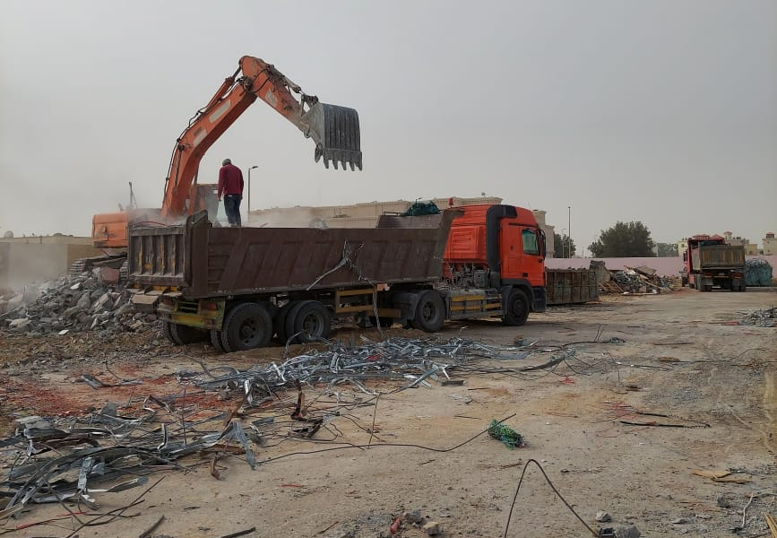

أفضل مقاول اسفلت وهدم بالدمام – 0567696080

تقوم شركة اسفلت هدم بالدمام بـ هدم المباني بالكامل وجميع أعمال التكسير حيث نهدم العماير والفلل والقصور والمجمعات السكنية تكسير من الداخل والخارج وقص الجدران وشراء السكراب والنحاس وكذلك أعمال الاسفلت والطرق وموقف السيارة.
شركة هدم المباني في الدمام
شركتنا مؤسسة مقاولات عامة متخصصون في هدم وتكسير وازالة جميع انواع المباني الحكوميه والشركات وترحيل المخلفات نهدم العماير والفلل والقصور والمجمعات السكنيه والتجاريه والاسواق والاستراحات والمساجد اللتي عليها ازاله أو توسعه واعمال الأسفلت والطرق ومواقف السيارات والمستودعات وشراء السكراب.
مقاول هدم بالخبر
هدم المباني مجانا
هدم المباني الخاصة بك وإزالة حطام المبنى مجانا من خلال تعويض الخردة. الجودة والكفاءة في العمل في الوقت المحدد هو أولويتنا. أكثر من عشرين عامًا من الخبرة في مجال هدم المباني في جميع أنحاء المملكة العربية السعودية.
هدم المباني الصغيرة والمباني متعددة الطوابق من المنازل والشقق والألواح وفيلات الأمير والمباني التجارية والمباني الصناعية والمباني الحكومية والمدارس والكليات والجامعات هدم المباني.
هدم جميع المباني مقابل الموجود في المبنى وكذلك ترحيل المخلفات مجانا حفر الخزان والقواعد مجانا
افضل مقاول هدم بالدمام
الشركة لديها مقاول هدم يقوم بهدم جميع أنواع المباني والشركات الحكومية وكذلك الفيلات والقصور والمباني. مجمعات سكنية. بالإضافة إلى هدمت الشركة جميع المباني وهدمت أسواق مختلفة وصالات ومساجد لأن عملية الهدم كانت بسبب انتهاء عمر المبنى خاصة وأن الشركة تتمتع بأعلى مستوى من الاحتراف والتدريب يقوم العمال بتنفيذ التفكيك معالجة وتوفير أفضل المعدات المتطورة.
تستخدم البوكلينات لهدم وسحق المباني القديمة بالدمام وهي متخصصة في أعمال الهدم بكافة أنواعها وتتخصص في هدم المباني بمختلف أنواعها وتتكون من كوادر فنية وفنية على دراية تامة بالطرق والأساليب المختلفة لأن عملية الهدم ستنتج العديد من النتائج المختلفة ، حسب دقتها وكفاءتها. عند صياغة احتياطات الهدم اللازمة ، سيتم هدم المبنى بطريقة جيدة ، مع الحفاظ على المبنى المجاور من حدوث شقوق او تصدعات
مميزات شركة هدم منازل الدمام
تتمتع شركة هدم مباني بالدمام بالعديد من المزايا المختلفة مما يجعلها رائدة في مجال هدم المباني لأن الشركة معروفة بامتلاكها للعديد من أحدث معدات الهدم. ولتقليل السعر قامت شركتنا بهدم جميع المباني بمختلف الأحجام ، وبما أن الشركة متخصصة في أعمال الهدم على أعلى مستوى ، فإن الشركة تتعامل مع تأثير الهدم في المناطق النائية ومن خلال القيام بجميع أعمال الصيانة داخل وخارج جميع المباني خاصة المباني المتضررة ، لأن شركة هدم المباني بالدمام تقوم ببناء أحدث التصاميم للمباني المتضررة ولديها مهندسين معماريين مدربين تدريباً جيداً.
نظرًا لأن الشركة قد اتخذت العديد من الإجراءات الوقائية قبل الشروع في عملية التفكيك ، فإن هذا الأمر فريد من نوعه وهو الإجراء الوقائي الذي اتخذته الشركة قبل عملية التفكيك ، لذلك فهو يوفر الأمان والحماية اللازمين ، ويوفر إجراءات وقائية شاملة ، لأن الهدم يتم الحصول على الترخيص من جهة حكومية ومراجعته.
تتم عملية الهدم من خلال المسوحات الهندسية للمباني ، والتفتيش الشامل للمباني ، حتى لا تتضرر المباني المجاورة بأي شكل من الأشكال ، لحماية الأرواح البشرية من أي ضرر.
هدم المباني مجانا في الخبر
مقاول هدم المباني بالدمام
نظرًا لأن شركة هدم المباني بالدمام متخصصة في هدم المباني ، يقوم مقاول هدم المباني بعملية هدم المباني ، لأن المقاول هو خبير الهدم على أعلى مستوى في عمليات الهدم ، لذلك يقوم أيضًا بالكثير من الأعمال اللازمة لحماية المباني المجاورة ، تستخدم أحدث معدات الهدم لوضع خطة هدم محددة ، لأن المعدات معقدة للغاية في الفك ، لأنه سيتم فحص المبنى قبل الهدم لضمان سلامته ويمكن الكشف عن أي هدم محتمل تالف ، يمكن للمقاول أيضًا اكتشاف وجود الغاز في المبنى بأكمله لتجنب حدوث انفجار.
ينقسم مشروع الهدم والتكسير إلى قسمين:
- وجود مياه جوفية تحت المبنى.
- إنتهاء عمر المبنى.
- تدمير بعض الجدران في المبنى.
هدم كامل
وهي عملية هدم يتم فيها هدم المبنى بالكامل ، وهدم المبنى من جميع الجوانب والزوايا ، والغرض منه هو بناء مبنى جديد ، أو انتهاء العمر الافتراضي للمبنى ، أو بناء مبنى آخر ، وهدم المباني ليس لأغراض أخرى. المقاولون المتخصصون في عملية الهدم لديهم أدوات ومعدات مختلفة للهدم.
الهدم الجزئي
هذه طريقة هدم يتم فيها هدم جزء من المبنى ، حيث يقوم المقاول أو الشركة المسئولة بهدم جزء معين من المبنى بعد فحص المبنى وإظهار أن هدمه لن يؤثر على باقي المبنى. ، و قد يكون سبب هدم المنزل حريق أو تلف أجزاء معينة من المبنى ، لذلك قد يتم تدمير الحمام أو المطبخ أو إعادة بنائه بطريقة أخرى أو قد يتم هدم بعض الأجزاء. يكون الحريق للقضاء على الحريق أو أنه تسرب يتم إزالة الجزء المتسرب منه لحماية باقي المبنى.
مؤسسة هدم بالدمام
يعمل المقاول على توفير كل ما يساعد فى عملية الهدم بالإضافة إلى العمل على توفير وتسهيل كافة المعدات الخاصة بالهدم والتى تتم على أسس علمية وفحص شامل للمبانى ،كما أن الشركة لا تقوم بعملية الهدم فقط قبل أن تتعرف على السبب من وراء ذلك الهدم وهل وجود مياه جوفية فى أسفل المبنى أو هناك أى مشكلة فى المبنى وتحتاج لترميم.
مقاول هدم المباني مجانا في مدينة الدمام
أكثر من عشرين عامًا من الخبرة في مجال هدم المباني والحفر في جميع أنحاء مدينة الدمام المملكة العربية السعودية ..
هدم المباني الخاصة بك وإزالة حطام المبنى مجانا من خلال تعويض الخردة ..
أسعار هدم المباني بالدمام
هناك العديد من الأساليب المختلفة فى هدم المبانى وهناك العديد من الشركات التى تعمل فى الهدم ومجموعة من الأفراد المسئولين عن الهدم إلا أننا فى نهاية الأمر من أفضل الشركات التى تعمل فى مجال الهدم وبناء على خبراتنا وبناء على المعدات والأجهزة والآلات لا نعرضك أنت وأفراد أسرتك للخطر ولا نقوم بتعرض المبانى لمشاكل تظهر فيما بعد كما أن الشركة توفير مجموعة من المميزات التى يتم توفيرها أثناء القيام بتلك المهام من أهمها ما يلي:-
- العمل على توفير مجموعة من المعايير الدولية المتميزة فى عملية الهدم والعمل على إزالة بقايا الهدم والردم وغيره.
- توفير مجموعة من أفضل السيارات الحديثة المجهزة بكافة الإمكانيات التى تساعد على الهدم بشكل صحيح دون أن يسبب فى التعرض لمشاكل تظهر فيما بعد.
- العمل على توفير مجموعة من الفنيين المتخصصين والمهندسين المسئولين عن الهدم.
افضل مقاول اسفلت بالدمام
يقدم افضل مقاول اسفلت بالدمام أفضل الخدمات للعملاء الكرام من خلال التعاقد من الشركات والمؤسسات، وليس هذا فحسب بل يتعامل أيضاً مع أصحاب المحال التجارية والمطاعم حتى يستطيع تنفيذ متطلباتهم من خلال رصف الطرق والشوارع المؤدية إليهم وعمل الخطوات اللازمة حتى تصبح هذه الطرق متساوية للمارة والسيارات دون الشعور بأي معوقات.
يتميز مقاول اسفلت بالدمام بأنه قادر على تلبية كافة متطلبات العملاء بكل تفاهم وطاعة، فهو يعمل على مدار الـ 24 ساعة وطوال أيام الأسبوع.
أسعار مقاول اسفلت بالدمام
يحرص دوماً على توفير كافة الخدمات بقدر عالي من الدقة والمهارة، لذا يهتم باستيراد المواد البترولية المخصصة في رصف الشوارع والطرق من دول صديقة وأخذت علامة الجودة في هذه المواد.
أرقام مقاول اسفلت بالدمام
يحرص على اتباع هذه الخطوات لضمان أفضل جودة: